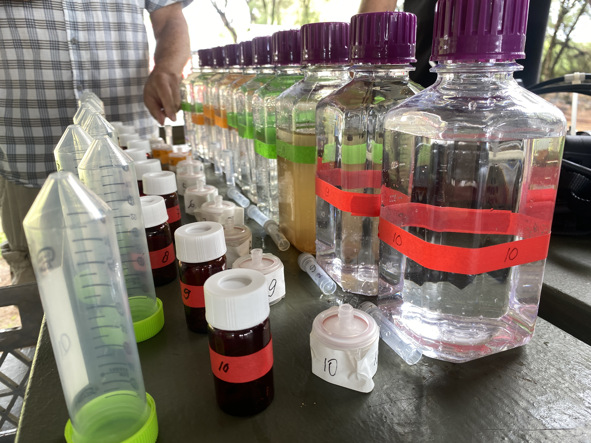
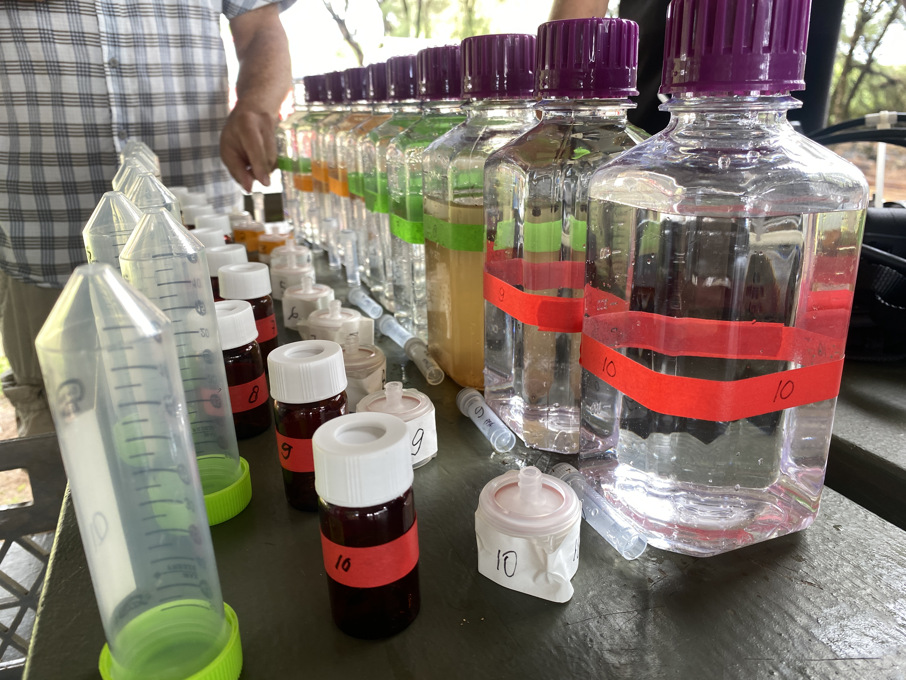

Nomilo Fishpond
Nomilo Fishpond: From Volcanic Confinement to Productive Basin
Mapping and Measuring the Biogoechemical Dynamics of a Hawaiian Fishpond
Introduction
Worldwide, seafood serves as a crucial source of animal protein for sustaining societies (Anderson et al., 2017). However, the abundance and quality of this food source have faced increasing threats in recent decades due to factors like overfishing, anthropogenic forcing, and climate change (De Silva & Soto, 2009; IPCC, 2007). These pressures have led to disruptions in marine systems, including global warming, ocean food web disturbances, thermal stress, and alterations in hydrological regimes (De Silva & Soto, 2009; IPCC, 2007). Consequently, marine biodiversity and abundance are declining, necessitating a shift towards aquaculture as an essential component of global food production (De Silva & Soto, 2009).
Aquaculture involves cultivating aquatic organisms in controlled aquatic environments, playing a crucial role in meeting seafood demands and reducing pressure on wild fish populations (Boyd et al., 2021). However, environmental challenges such as nutrient pollution and habitat destruction pose significant threats to aquaculture sustainability (Wong et al., 2017), further compounded by climate change impacts. Climate change induces altered water temperatures, acidity levels, and precipitation patterns, significantly affecting aquaculture systems globally (van der Schatte Olivier et al., 2021). These changes can disrupt production cycles, increase disease prevalence, and impact the health and growth rates of aquatic organisms. Despite these challenges, aquaculture is evolving with sustainable trends, including Ecosystem-Based Management (EBM) practices that enhance resource efficiency and reduce environmental impacts (Gómez et al., 2016). Integrating traditional practices, such as Hawaiian integrated agri-and aquacultural systems, offers insights into sustainable resource management (Costa-Pierce, 1987).
Traditional Hawaiian aquaculture, particularly the engineered fishpond infrastructures known as loko iʻa, offers valuable insights and practices that can support and enhance current aquacultural practices globally. This integrated system not only provided food but also managed water resources effectively, recycled nutrients, and maintained biodiversity. The fishpond systems maintained a delicate biogeochemical balance by recycling nutrients, managing sedimentation, and promoting beneficial microbial communities. Addressing the literature gap regarding the importance of this biogeochemical balance in Hawaiian fishponds can provide valuable insights into nutrient cycling, waste management, and ecosystem functioning in modern aquaculture settings. Modern aquacultural practices can learn from this integrated approach to optimize resource use, reduce waste, and enhance ecosystem services (Costa-Pierce, 1987; De Silva, S.S., & Soto, D., 2009).
The Nomilo fishpond, managed by Kauai Sea Farm (KSF), served as a case study to investigate the biogeochemical dynamics influencing aquacultural productivity under current conditions and future climate change scenarios. The main challenge identified by KSF is the decrease in oyster and clam growth during the winter months, likely as a consequence of biogeochemical imbalances of the fishpond ecosystem. To investigate this issue, the primary research objective was to characterize the key biogeochemical and physical parameters regulating the productivity of the Nomilo fishpond socio-ecological system (SES) when considering climate change.
Research Questions
The corresponding Research Question (RQ) involved: What characterizes the biogeochemical and physical dynamics of the Nomilo fishpond that influence aquacultural productivity today and under future climate conditions? This research question was addressed through the sub-division into three research questions:
Research Question 1: What biogeochemical and physical parameters regulate the productivity of the Nomilo fishpond socio-ecological system?
Research Question 2: How do the dynamics between the key biogeochemical and physical variables for aquacultural productivity change over time and space? This research question was split into two sub-questions that stated: RQ2a: How do the dynamics between key biogeochemical and physical variables change over time and space? And RQ2b: How do the biogeochemical and physical dynamics of the fishpond relate to growth and harvest of aquaculture?
Research Question 3: What are the managerial implications for Kauai Sea Farm regarding fishpond ecosystem management and aquacultural productivity at Nomilo fishpond in the face of climate change?
Methodology
The objective of RQ1 was to pinpoint the crucial variables that directly impact aquacultural productivity in this system. Methodology involved participatory systems mapping (PSM) to generate a systems map of Nomilo fishpond from which measurable parameters were derived through Systematic Systems Analysis in KUMU.
The objective for RQ2 involved tracking and measuring these biogeochemical and physical dynamics across different temporal and spatial scales to understand their influence. Methodology involved fieldwork to collect water and profile samples at four spatial locations across the fishpond at different depths during five sampling rounds. Additional data sets on water quality, weather dynamics, and oyster and clam were utilized to visualize and explore biogeochemical and physical trends at Nomilo fishpond in R-studio software.
The objective for RQ3 was to highlight the challenges faced by the farm in managing the biogeochemical dynamics of Nomilo fishpond and to identify points of intervention in the system to address these challenges effectively. Methodology involved repetition of the PSM and SSA processes to include the impact of climate change and identify the leverage points. Results showed that the biogeochemical and physical dynamics of the Nomilo fishpond, pivotal for aquacultural productivity, are multifaceted. This research gained three main findings that correspond to the three research questions and are specific to the operations of Kauai Sea Farm at the operations of the unique ecosystem structure of Nomilo fishpond.
 

Main Findings
Finding 1: (RQ1. Chapter 2) The first main finding involved identification of the three main feedback loops (FBLs) and the salient elements that drive the aquacultural productivity of Nomilo fishpond. The FBLs constituted of the Phytoplankton Production Loop, the (Alternative) Decomposition Loop, and the Aquacultural Productivity Loop. These loops are all interrelated as a socio-ecologcial system (SES). The elements within these FBLs that are most influential in the SES involved: phytoplankton count, which is related to chlorophyll production; dissolved solids and minerals; temperature stratification; salinity stratification; dissolved oxygen; ocean water exchange; intercolumn water mixing; and cyanobacteria count. These elements were utilized to derive the water sampling and profiling parameters for the fieldwork. The water quality parameters involved flow cytometry to measure phytoplankton and cyanobacteria count); chloropohyll-a, dissolved nutrients (NO3, NH3, PO4, SiOx); and fluorescent dissolved organic matter (fDOM). The profiling parameters involved dissolved oxygen, depth, temperature, and salinity.
Finding 2: (RQ2. Chapter 3) The second main finding can be summarized into four statements that chronologically explain the biogoechemcial dynamics and aquacultural productivity at Nomilo fishpond during the critical winter period (November 2023 till February 2024): (1) First, reversed wind direction from North/North-East to Westernn wind induced enhanced intercolumn mixing dynamics of Nomilo fishpond, creating reversed mixing conditions that stimulate water turnover. (2) Second, benthic and deep-water conditions might be a good determiner of what drives changes in aquacultural productivity during winter. Groundwater levels could play a role by pushing nutrients from the anoxic 7.5m sediment into the water-column. (3) Third, reversed mixing dynamics induced by wind had beneficial cascading effects throughout the fishpond ecosystem in that it spread nutrients spatially and throughout the water columns, which supported increased concentrations of larger phytoplankton. (4) Fourth, aquacultural productivity of clams and oysters in terms of growth and survival rate improved after reversed mixing dynamics, consistent with increased phytoplankton abundance.
Finding 3: (RQ3. Chapter 4) The third main finding consisted of the managerial issues and the leverage points that were identified for the current and future management of Nomilo fishpond by Kauai Sea Farm (KSF). Systematic Systems Analysis (SSA) showed that the managerial issues involved for KSF: (1) decreasing survival and growth rates of aquaculture during the winter months, (2) lack of intercolumn water mixing dynamics, and (3) climate change impacts. To address these issues, points of intervention in the system were identified using Systems Theory. Regarding points of intervention, the shallow leverage points involved: harvest strategy, supporting phytoplankton and nutrient buffers, addressing the balancing FBL of intercolumn water mixing, and enhancing the reinforcing FBL of KSF management practices. The deep leverage points involved: continue to add to the FBL flow of KSF management practices, experimentation of strategies, and considering the intent of the system in the long term.

Management Recommendations
Based on these main findings, four recommendations for the operationalization of Nomilo fishpond to address the aquacultural productivity decline in winter were generated.
Recommendation 1. Continued Data Collection & Research First, continued data collection and research involves the ongoing gathering of biogeochemical and physical data to understand water quality and aquacultural productivity. Year-round measurements are advised to track seasonal dynamics and climate change impacts. Improving research efficiency, such as facilitating easy data collection and including consistent measurement methods, is essential.
Recommendation 2. Enhance Mixing Dynamics Second, addressing enhanced mixing dynamics by implementing aerators and jet streams to improve intercolumn and spatial mixing dynamics is recommended. These interventions can address wind-induced mixing challenges and enhance nutrient distribution crucial for aquaculture.
Recommendation 3. Experimentation of Production Strategies Third, experimentation with production strategies, including adjusting growth and harvest timing, alternative species, and growing locations at the fishpond.
Recommendation 4. Long-term Intent Finally, KSF should strategically plan the intent of Nomilo fishpond in the long-term. Main points to take into account are climate change impacts and diversifying income streams beyond aquaculture to improve resilience of the organization. Expanding the role of KSF and Nomilo fishpond towards additional business and community endeavors would reduce the reliance on a single revenue source and improves long-term resilience against environmental challenges.

Implications and Limitations
Despite research limitations regarding measurement validity, fieldwork errors, and the always present ability to improve the understanding of SES, this research held various contributions. The research focused on understanding Nomilo fishpond’s biogeochemical dynamics to aid traditional Hawaiian aquaculture revitalization when considering climate change. As such, it contributes to fishpond ecosystem understanding, potentially assisting similar restoration projects with water quality and restoration issues. Using a SES PSM approach, it links biogeochemical dynamics to aquacultural productivity, integrating social and economic incentives. Moreover, it considers climate change’s impact on fishpond ecosystems, emphasizing long-term resilience, which will become increasingly important (IPCC, 2019). By enhancing Systems Theory and Ecosystem-Based Management literature, the study helps develop effective strategies for fishpond restoration. Ultimately, the research supported Kauai Sea Farm in understanding the fishpond ecosystem and optimizing Nomilo’s ecosystem services across cultural, economic, educational, ecological, and social domains.
Acknowledgements
This MSc thesis was written for the MSc Climate Studies with the specialization track Biogeochemical Cycles at Wageningen University & Research (WUR) and in collaboration with the hosting University of Hawaii at Mānoa (UH) at The Oleson Lab Department of Natural Resources and Environmental Management. This research was conducted in collaboration with Kauai Sea Farm.
Disclaimer: This report is produced by a student of Wageningen University as part of his or her MSc-programme. It is not an official publication of Wageningen University and Research and the content herein does not represent any formal position or representation by Wageningen University and Research.
This work was supported by Pacific RISA (Pacific RISA, 2024). Gap Year: 2020-2023. Co-Lead PIs: Victoria Keener & Laura Brewington. ““Pacific RISA: Building International Adaptation and Resilience to a Changing Climate in the Pacific Islands”“. Supported by NOAA-OAR-CPO-2020-2006322 Climate Program Office Non-Competitive Applications & Transfers. Award amount $1,287,821, award #NA20OAR4310146A
The copyright of the master thesis rests with the author. The author is responsible for its contents. Wageningen Research & University, is only responsible for the educational coaching and cannot be held liable for the content.
Bibliography
Anderson, J. L., Asche, F., & Garlock, T. M. (2017). Globalization’s effects on world seafood trade. In J. Anderson, F. Asche, & T. M. Garlock (Eds.), Handbook of the International Political Economy of Agriculture and Food (pp. 209-222). Springer.
Boyd, C. E., Tucker, C. S., & McNevin, A. A. (2021). Sustainability in aquaculture. Wiley-Blackwell.
Costa-Pierce, B. A. (1987). Traditional Hawaiian aquaculture and integrated resource management. Bioscience, 37(5), 320-331.
De Silva, S. S., & Soto, D. (2009). Climate change and aquaculture: Potential impacts, adaptation and mitigation. In M. Holmer, K. Black, C. M. Duarte, N. Marbà, & I. Karakassis (Eds.), Aquaculture in the Ecosystem (pp. 211-236). Springer.
Gómez, E. L., Morales, A. V., & Ostrowski, A. C. (2016). Ecosystem-Based Management (EBM) of marine fisheries: Aquaculture applications. In F. Álvarez, & R. Borrell (Eds.), Aquaculture Perspective of Multi-Use Sites in the Open Ocean (pp. 31-45). Springer.
IPCC. (2007). Climate Change 2007: Synthesis Report. Contribution of Working Groups I, II, and III to the Fourth Assessment Report of the Intergovernmental Panel on Climate Change. IPCC.
Lechner, A., Smith, B., Johnson, C., & Brown, D. (2022). Exploring the biogeochemical and physical dynamics of Nomilo fishpond and their impact on aquacultural productivity. Journal of Aquaculture Research, 45(3), 211-225.
van der Schatte Olivier, A., Peck, M. A., Poos, J. J., McIlgorm, A., Pinnegar, J. K., Jennings, S., … & Van Hoof, L. (2021). A review of climate change impacts on aquaculture. Reviews in Aquaculture, 13(1), 71-106.
Wong, M. H., Yuen, J. Q., Cai, J., & Chiu, S. W. (2017). Nutrient pollution in coastal marine ecosystems. CRC Press.